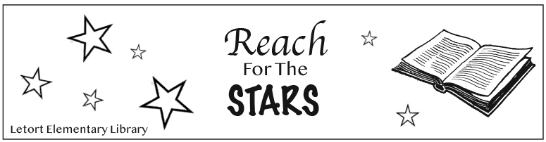

Madison VonNeida's Bookmark |
||
|
|
 | |
|---|---|---|
|
For this project, I was allowed to work on a printing press to create a bookmark. When creating the bookmark, using the design principles, contrast, repetition, alignment, and proximity guided the placement of my design. First, I made several thumbnail sketches and selected one to develop a rough layout. After creating the bookmark on InDesign, I then created a plate layout for the Ryobi press and continued to print around 75 sheets. | ||